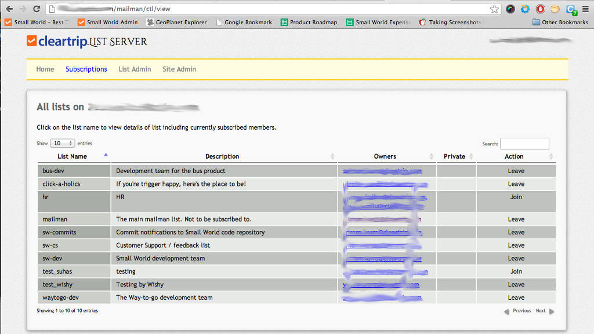

Mailman Single SignOn (SSO) Customizations Summary
The SSO extension to Mailman is meant for a Mailman installation for use within a closed group of users. This sort of an installation can be used to host a company's internal mailing lists used by employees, for e.g. The extension is a single additional CGI script that provides a small set of Mailman features.Key differences between the stock GNU Mailman and Mailman SSO?
- Built for a intranet-type set up with single signon authentication
- List subscribe and unsubscribe are single click operations.
- There are no passwords to remember. You will not receive monthly reminders for each list you are subscribed to - because Mailman SSO takes care of this behind the scenes
- A lot of the GNU Mailman functionality is not exported. Many of the features will never be exposed. Others will be supported over time, for e.g. - private archives, subscribing in digest mode, etc.
Home Screen:
In our installation, access to the server is controlled through a single
sign on authentication, and a cookie value is verified to establish
credentials for access. The userid - value of the cookie - is displayed on
the top right corner.

Subscriptions:
This is where all the advertised lists on the current server are listed. Folks can join or leave with a single click, and the status is updated instantly. 
List Admin:
In this tab, one can create new lists, and manage lists that they own. The following screenshot is the default view - where all the lists that have the current user as the owner are listed in a table.
The user can create a new list by clicking the green "Create new" link just below the table, and a form is displayed, like so:
Clicking the name of any of the lists will open up a form below the table, and a small set of configuration variables can be edited.